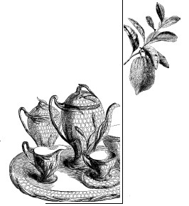
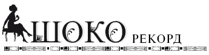
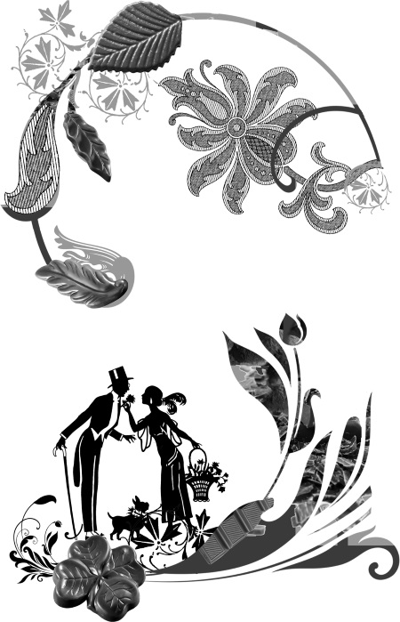

Из истории появления шоколада в Европе .

Нет шоколада – нет завтрака!
Впервые шоколад появился в нашей стране при императрице Екатерине Великой. Говорят, что это лакомство в 1786 году преподнес двору ее императорского величества посол Венесуэлы генералиссимус Франциско де Миранда. Но мировая история продукта гораздо старше и сложнее. Первыми, кто начал регулярно употреблять шоколад в виде горького хмельного напитка, были племена ацтеков и майя. Это произошло, как считают историки, в промежутке между 400 годом до н. э. и 100 годом н. э. Из Южной Америки он попадал в Европу, где так же в виде напитка, но уже с сахаром шоколад приобрел популярность в высшем свете. Интересно, что индейское название дерева – какао, плоды которого и использовали люди, прижилось в Новом Свете как название напитка. Странно то, что другие продукты из какао-бобов получили иное название – шоколад, хотя у индейцев густой холодный напиток из какао с ванилью и специями назывался близким по звучанию словом «чоколатль» или «ксокоатль», что переводилось как «пенная вода». Пили этот напиток в первую очередь высшая знать, священнослужители и торговцы, а само какао играло важную роль в культурной и религиозной жизни индейского общества майя и ацтеков. Многие религиозные церемонии этих народов связаны с употреблением какао.
Шоколаду постоянно приписывают какие-то особые свойства: магичестие, мистические, целебные… Например, по-латыни какао-деревья называются Theobroma Cacao, что означает «пища богов». На греческом theos означает «бог», а broma – «пища».

Из европейцев первым попробовал чоколатль Христофор Колумб в 1502 году и даже привез бобы домой. Но тогда на них не обратили никакого внимания, ведь самому Колумбу шоколад не понравился. Вторая попытка приучения европейцев к какао стала успешной – конкистадоры генерала Эрнана Кортеса в 1519 году попробовали его, привезли чудо-бобы в Европу и представили невиданный прежде напиток при испанском дворе. Какао понравилось, и предприимчивый покоритель Нового Света организовал торговлю им со своей плантации в Америке.
Поначалу весьма дорогостоящий продукт был недоступен большинству, но со временем многим горожанам стало по карману покупать если не сами какао-бобы, то отходы от их производства, из которых делали напиток какавелла, похожий на какао, но более жидкий. Но и сам напиток какао становился все более популярным. На протяжении десятилетий изменился и его состав. Довольно быстро европейцы отказались от использования перца и сильных специй, стали добавлять больше сахара или меда, а для аромата использовали ваниль. В относительно холодной Европе какао стали подогревать, что также повлияло на вкусовые предпочтения испанцев, итальянцев и французов. На территорию германских государств шоколад попал из Италии, а с 1621 года монополия Испании на этот продукт и вовсе перестала действовать – какао-бобы появились на оптовых рынках Голландии и по всему континенту. В розницу какао продавали в прессованных плитах, от которых торговец отламывал кусок нужного веса. В специальном сосуде какао нагревали, добавляли в него сахар и воду и разливали по чашкам. В начале XVIII века в Великобритании попробовали вместо воды использовать молоко и получили более мягкий и вкусный напиток, чем тот, что готовили на воде. По примеру британцев и в других странах при приготовлении какао стали использовать молоко, и это вскоре стало обычным делом.
С открытием в 1828 году голландского химика Конрада ван Хаутена появилась возможность изготовлять твердый шоколад, путем добавления какао-масла в порошок какао. А через двадцать лет в Германии составили классическую рецептуру твердого шоколада, используемую до настоящего времени. В тертое какао добавляется какао-масло, сахар и ваниль. От количества добавленного какао-масла зависит степень горечи шоколада. При добавлении 30 % какао-масла изготавливают плитки молочного шоколада, а при более высоких цифрах – горького. С повышением спроса на горький шоколад с высоким содержанием какао многие производители указывают на упаковке процент его содержания.
Мы начали наш исторический рассказ с того, что впервые шоколад появился в России при императрице Екатерине II, а упомянутый ранее Франциско де Миранда привез какао из Америки, и русские открыли этот продукт, как и европейцы, напрямую. Некоторое время шоколад, а мы имеем в виду напиток, пили исключительно в дворянской и купеческой среде. Основная причина этого – высокая цена продукта, доставлявшегося из-за океана, да еще через европейские порты. Ситуация начала меняться к середине XIX века, когда в 1850 году немец Теодор Фердинанд Эйнем приехал в Россию для занятия бизнесом и открыл в Москве небольшое производство шоколада, ставшее основой большого производства, известного ныне под маркой «Красный Октябрь». Шоколад «Эйнем» славился не только отменным качеством и превосходным вкусом, но и дорогой и элегантной упаковкой. Конфеты укладывали в шелковые или бархатные ячейки, коробки отделывали натуральной кожей с золотым тиснением. Т.Ф. Эйнем придумал продажу наборов конфет с сюрпризами-подарками внутри. Обычно это были ноты небольших музыкальных композиций – песенные или просто поздравительные открытки. В Санкт-Петербурге, Москве, Нижнем Новгороде и других крупный городах Российской империи во второй половине XIX столетия открываются кафе и рестораны, где можно было выпить горячего какао или полакомиться шоколадом собственного производства. Постепенно обыватели приучаются пить какао и дома, покупая какао-порошок в кондитерских магазинах, причем для людей с небольшими доходами там предлагали какавеллу – отходы от производства какао-бобов. Напиток из какавеллы носил то же название и отличался от настоящего какао жидкой консистенцией и менее выраженным вкусом. Долгое время какавелла была очень популярна, но с ростом доходов населения ее вытеснил какао-порошок, изготовленный из какао-бобов.
В нашей стране известным шоколадным магнатом был промышленник Алексей Иванович Абрикосов, выпускавший такие знаменитые конфеты, как «Гусиные лапки», «Раковые шейки» и «Утиные носы». Владельцы «Товарищества А.И. Абрикосова сыновей» первые в России придумали покрывать глазурью сушеные фрукты – так появились чернослив и курага в шоколаде, до этого завозившиеся к нам из Франции. В 1900 году процесс глазирования шоколадом на фабрике Абрикосовых становится автоматизированным, а годом ранее Товарищество получает высокое звание «поставщик двора его императорского величества». В 1918 году все «сладкое» производство Абрикосовых было национализировано. Свою продукцию Абрикосовы также упаковывали в дорогую и запоминающуюся упаковку. В коробку с шоколадом вкладывались карточки и этикетки, посвященные артистам, ученым, музыкантам и литераторам, причем ориентировались шоколадные короли главным образом на детей, поэтому и конфеты они называли близкими детскому сердцу названиями, где присутствуют лапки и клювики.

В честь священного месяца Рамадан в Индонезии была построена мечеть из шоколада: шириной три метра и высотой пять метров! Строительство шло две недели. Все пришедшие посмотреть на это чудо могли не только полюбоваться, но и попробовать кусочек.

В прошлом веке отечественная промышленность выпускала множество горького и молочного шоколада, шоколадных конфет и изделий, глазурованных шоколадом. Исторически сложилось так, что большая часть потребляемой в
России продукции относится к молочному шоколаду, в меньшей степени у нас едят шоколад горький. Но это связано с тем, что немец Эйхен привез из Германии именно молочный шоколад, а его фирма быстро приучила наших предков к шоколаду с меньшим содержанием какао. Конечно, любили в России и темный шоколад, но употребляли его в меньших объемах. Ценители всегда отмечали изделия московской кондитерской фабрики «Красный Октябрь» или фабрики имени Н.К. Крупской, расположенной в Санкт-Петербурге. Последняя даже имела своих постоянных почитателей – любители шоколада искали именно ее продукцию.
